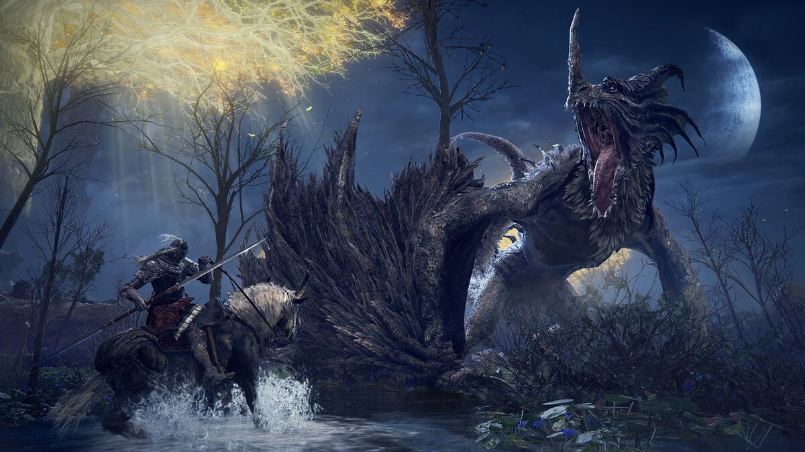

¿Qué es?
Es un videojuego de rol de acción desarrollado por FromSoftware y publicado por Bandai Namco
Entertainment. El videojuego surge de una colaboración entre el director y diseñador Hidetaka
Miyazaki y el novelista de fantasía George R. R. Martin. Fue lanzado a nivel mundial el 25 de
febrero de 2022, fecha revelada durante el evento Summer Game Fest, para las plataformas Xbox One,
Xbox Series X/S, Microsoft Windows, PlayStation 4, PlayStation 5.

Desarrollo
Anunciado en el E3 2019, Elden Ring es un juego de rol de acción en tercera persona desarrollado por
FromSoftware y publicado por Bandai Namco Entertainment para Microsoft Windows, Xbox One, Xbox Series
X/S, PlayStation 4 y PlayStation 5. El juego está dirigido por Hidetaka Miyazaki, mejor conocido por
crear la serie Souls también desarrollada por FromSoftware, con construcción de mundos del novelista de
fantasía George R. R. Martin, mejor conocido por su franquicia Canción de hielo y fuego. Como fanático
de la obra de Martin, Miyazaki se puso en contacto con él para hacerle una oferta para trabajar juntos
en un proyecto. Sorprendido de que Martin mostrara interés, comenzarían a tener discusiones con Miyazaki
describiendo qué tipo de temas, ideas y aspectos relacionados con el juego imaginaba para un proyecto.
Con el tiempo, Miyazaki se convirtió en la base de Elden Ring y le dio la libertad creativa para
escribir los aspectos más importantes del universo del juego, que Miyazaki utilizó como base para
escribir la trama principal real que el jugador experimenta durante el juego. Miyazaki comparó las
contribuciones de Martin con las de un "manual del Amo de la Mazmorra en un RPG de sobremesa", y cuando
se le preguntó sobre la posibilidad de que la historia fuera novelada, afirmó que prefería que los
jugadores la experimentaran ellos mismos jugando al juego, ya que piensa que los secretos y misterios
del juego se estropearían de otro modo.